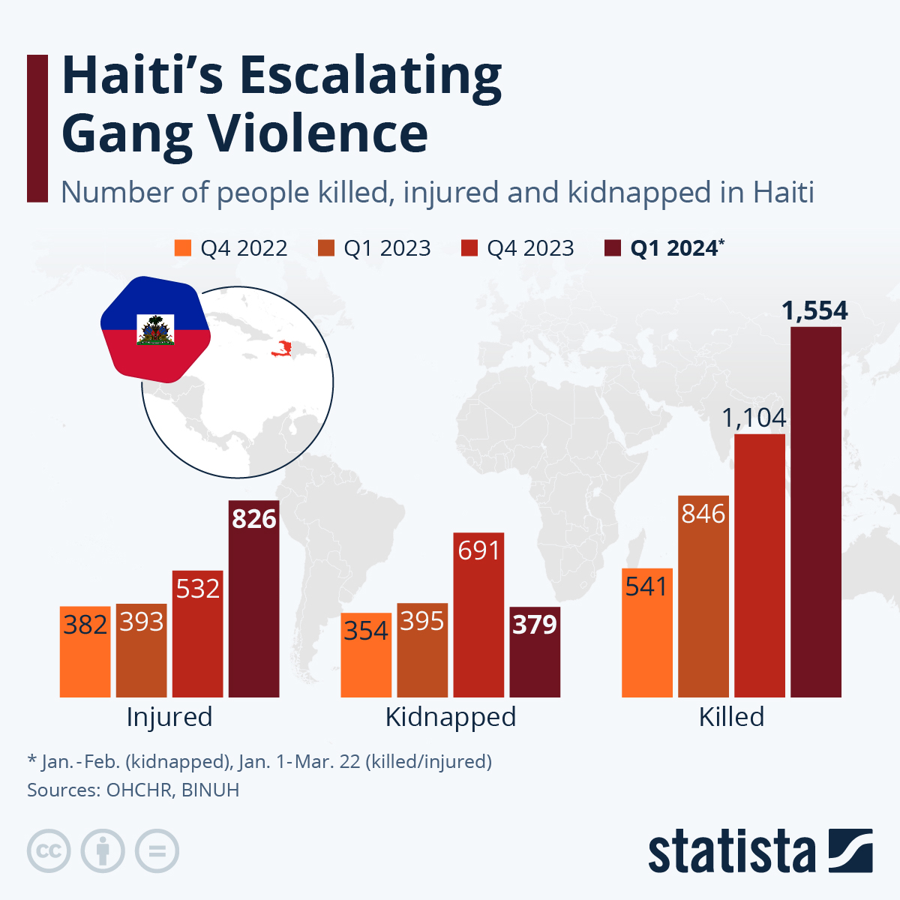

The country of Haiti is currently facing many problems vastly due to political instability,
poverty, weak government institutions, and limited security forces. The problem has become a cycle where violence
makes Haiti less stable, and that instability makes it easier for gangs to gain more power.
Armed gangs have gained control over large parts of Port-au-Prince (the capital of Haiti) including important roads
and transport routes. Their influence has expanded into rural areas and regions.
Haiti has experienced years of weak governance and political instability. The 2021 assassination of President Jovenel
Moïsecreated an especially serious leadership crisis, allowing gangs to expand their influence while government institutions struggled to respond.
Haiti's police and armed forces have struggled to deal with heavily organised criminal groups. Courts and other government institutions have also been disrupted,
making it difficult to prosecute criminals and maintain law and order.
High levels of poverty and limited economic opportunities make vulnerable people, particularly young people, more susceptible to recruitment by gangs.
Criminal groups make money through activities such as extortion, kidnapping and trafficking, allowing them to maintain their power and continue operating.
Violence has forced around 1.47 million Haitians from their homes as of June 2026, placing enormous pressure on communities that are already struggling with limited food,
housing and healthcare.
Gang violence disrupts businesses, schools, hospitals, transport and agriculture. This increases poverty and food insecurity, which can create even greater instability
and make it harder for the government to regain control.
2026b, United Nations : Office on Drugs and Crime, viewed 22 August 2026, <https://www.unodc.org/unodc/frontpage/2026/January/explainer_-organized-crime-and-gang-violence-in-haiti.html>.

Fleck, A 2023, Infographic: Haiti’s escalating gang violence, Statista Infographics, viewed 23 August 2026, <https://www.statista.com/chart/29965/un-data-on-haiti-crisis>.
